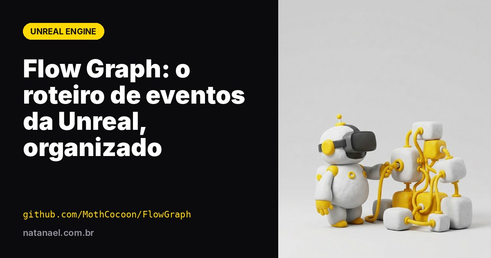

Flow Graph: o plugin open source que organiza o roteiro de eventos na Unreal
Missões, diálogos, etapas de um treinamento em VR. O Flow Graph troca o Level Blueprint espaguete por um editor de nós feito para roteirizar eventos, com contribuições até da Riot Games.

Todo projeto de Unreal que passa de um protótipo esbarra no mesmo problema: onde fica o roteiro? Numa experiência de VR, "roteiro" é tudo o que acontece em sequência — o usuário entra na sala, pega a ferramenta, a porta abre, a narração toca, a próxima etapa libera. Quando isso vai parar no Level Blueprint, em pouco tempo vira o que a própria documentação do Flow Graph chama de "monstro de espaguete voador".
O Flow Graph, mantido pelo desenvolvedor por trás do perfil MothCocoon no GitHub, é a resposta que muitos estúdios adotaram para isso.
O que é
É um plugin open source para Unreal Engine que traz um editor de nós feito especificamente para o fluxo de eventos de um mundo virtual. A ideia vem de ferramentas que estúdios de jogos narrativos usam há anos — o autor cita os editores de missões e diálogos de The Witcher como referência — e que a Unreal não tem de fábrica.
A diferença para o Blueprint está no conceito:
- Cada nó é um objeto, não uma função. Um nó guarda a lógica e os dados de um elemento inteiro do jogo — "esperar o jogador entrar na área", "tocar a narração", "liberar a porta" — e você escreve isso uma vez para o projeto todo.
- Os nós são assíncronos por natureza. Um nó ativo fica escutando um evento e só dispara a saída quando ele acontece. Não existe aquele emaranhado de Delay e Branch para esperar coisas.
- Os sistemas não se misturam. O código da porta não precisa saber da narração. O grafo é o lugar onde você conecta as peças.
- Debug no próprio grafo: durante o Play, o editor mostra quais nós estão ativos e as mensagens que você definir em cima deles.
Por que é coisa de quem trabalha sério com Unreal
O Flow Graph é deliberadamente simples: ele não vem com um sistema pronto de missões ou diálogos. Ele é a base para você construir o seu — e é exatamente por isso que é usado em produção. Algumas coisas que mostram a maturidade do projeto:
- Contribuições da Riot Games, incluindo os recursos de AddOns e Data Pins que levaram o plugin à versão 2.0.
- Integração com SaveGame, salvando o estado dos nós ativos, e com o Sequencer.
- Signal Modes, para alterar o grafo numa atualização sem quebrar saves antigos.
- Versões para as engines atuais, com projeto de exemplo (FlowGame) empacotado para UE 5.6, 5.7 e 5.8.
Como isso se aplica a projetos de VR
Para quem entrega experiências imersivas para clientes, o Flow Graph resolve dores bem concretas:
- Treinamentos em VR: cada etapa (pegar o EPI, inspecionar o equipamento, executar o procedimento) vira um nó. Mudar a ordem ou inserir uma etapa nova é reconectar fios, não reescrever lógica.
- Tours e estandes: a sequência de pontos de interesse, narrações e transições fica visível num só lugar — fácil de ajustar quando o cliente pede "troca a ordem desses dois".
- Reaproveitamento entre projetos: os nós que você cria (teleporte para ponto, aguardar interação, tocar áudio) viram uma biblioteca da casa, reutilizada no próximo job.
E tem um ganho que pouca gente conta: o grafo é legível para quem não é programador. Dá para mostrar ao cliente ou ao roteirista como a experiência flui, sem abrir Blueprint nenhum.
Como começar
- Baixe o plugin do repositório e coloque na pasta
Pluginsdo seu projeto (ou abra o projeto de exemplo FlowGame da sua versão da engine). - Desde a versão 2.2 o plugin vem desativado por padrão: ative em Edit → Plugins ou no
.uproject. - Assista à apresentação de 24 minutos indicada no README antes de sair criando nós — o autor insiste, e com razão: entender o conceito evita usar o Flow como se fosse Blueprint.
Links
- Repositório: github.com/MothCocoon/FlowGraph
- Documentação: mothcocoon.github.io/FlowGraph
Desenvolve experiências em Unreal e quer trocar ideia sobre arquitetura de projetos VR? Me chama no Instagram @natanaelddd.